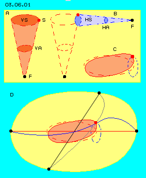
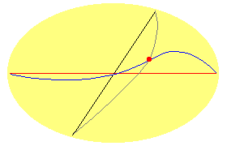
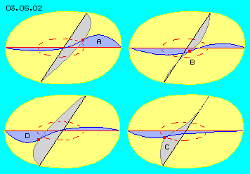
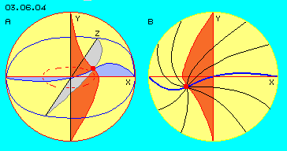
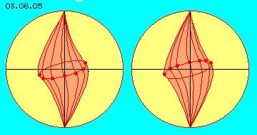
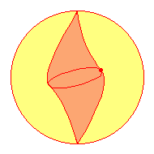
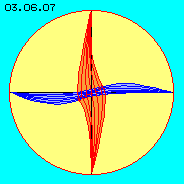
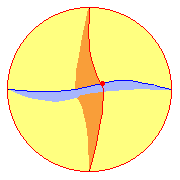

Swinging around vertical and horizontal Axis
|

|
|

|
At previous chapter ´Swinging Disc´ was described, the local aether movement in principle is swinging around at its equatorial plane. At previous chapter ´Circulating Wave´ now was described, not only a swinging at the equatorial plane exists but same time also circling movements around horizontal axis are necessary. Picture 03.06.01 schematically shows that fact once more.
At this picture left side at A is drawn the observed aetherpoint (S) and the track of its swinging (VS) around the vertical axis. Below is marked a point of (relative resting) Free Aether (F). Between both points, within the cone-shaped balancing area (VA), the swinging around the vertical axis is fading.
At this picture right side at B is drawn the swinging motion around a horizontal axis (HS), also with its balancing area (HA) towards a point of Free Aether (F) right side at the border of the equatorial plane.
This picture at C schematically shows the addition of both movements resulting a track some inclined versus the equatorial plane.
At this picture at D are drawn four connecting lines to four points of Free Aether (black). The observed aetherpoint (red) is positioned at its track right side up. The distances from this point to the Free Aether are different (here extremely overdrawn), resulting different bending of the connecting lines.
Left/right, up/down, front/back
At earlier pictures and animations, the movement at an equatorial plane was drawn left-turning (by view top down). Now it´s assumed, the movement around a horizontal axis is left-turning. So resulting of was a circulating wave, running clock-wise around the centre. Thus at following pictures and animations the movement at equatorial plane is drawn right-turning (by view top down).
Within universe exists no left/right, up/down or front/back. This problem is discussed by later chapter ´Movement ´Directions´ and also the reasons, why left-turning is the prevailing direction.
This animation demonstrates approximately, how the connecting lines are bended and twisted according to the central swinging motion. In the direction of each smallest distance towards the Free Aether, most wide bending is demanded, while at each opposite side the bending is much more flat.
Right side, the observed point is upside of the equatorial plane and also the bow of the connecting line is bended upwards. Afterward, the red point wanders towards the front side, coming to the equatorial level. There, the connecting line shows a strong bending to left side, thus into turning sense of the circulating wave. Some later at left side, this bow moves downward. If the red point is at the back of the picture, the bow of the connecting line again shows forward into turning sense (thus there to right side).

So these connecting lines at equatorial plane not at all represent simple cones of balancing areas, but are complex swinging movements into different directions by different shapes, thus not uniform.
These ´wheels´ of a circulating wave (of previous chapter) thus are not positioned at same level and the connecting lines do not swing around the horizontal axis exactly. These connecting lines preferably swing upside of the X-axis (here right side) resp. below (here left side).
Into directions cross to that axis, the connecting lines swing prevailing ahead (in turning sense) of each Z-axis.
The vertical balancing area, up to now was simply drawn as a cone with straight connecting lines. Now the objective of this chapter is description more detailed of these movements along the vertical axis.
At picture 03.06.02 are shown four still frames of previous animation. At A, the observed aetherpoint (red) is positioned upside of the X-axis and the connecting line there (marked blue) also shows a high upward bow.
At B and C this aetherpoint swings to left side and the strong bow of the connecting line is shifted ahead-left-side. At D, the aetherpoint is below the X-axis and the connecting line is strongly bended also downwards.
Transport of Material
The blue high ´mountain´ at A right side becomes a flat hill at D. The original small blue hollow left side at A becomes a deep valley at D. Synchronously to the circulating wave (of previous chapter) thus some ´material´ must be shifted via the ´poles´ towards left respective opposite to right side. Naturally this motion is not done by linear movement to and fro, but by a swinging motion around the vertical axis.

At picture 03.06.04 at A once more previous starting situation is drawn, thus with the observed aetherpoint right-upside X-axis. The connecting line along this axis is marked blue. Cross to this axis is drawn the Z-axis and the corresponding connecting line is drawn grey.
Now also are drawn the vertical Y-axis and the connecting line (red) between ´north- and south-poles´. If momentary the aether volume is at the ´blue hill´, material had to be lifted from downside up, thus the red connecting line downside shows a bow to right side. Opposite, upside of the blue mountain, some aether volume had to escape, thus the upper part of the red connecting line is dented resp. bended to left side.
At this picture at B, the observed aetherpoint has moved to left side. There is drawn the blue connecting line (now with valley left side) and also the red connecting line (of the Y-axis). This vertical connecting line at its upper part now is bended left side towards the deep blue valley, while the lower part of red connecting line is dented to right side.
Naturally, connecting lines exist from all points of Free Aether to the observed point. Here are drawn (black) only some lines at this X-Y-plane between the blue and red connecting lines. So at this local ´transport of materials´ is involved the total surrounding area, practically a sphere-shaped space of local aether movement (of which here is drawn only a cross sectional view onto X-Y-plane).
Rolling around vertical Axis
|
 |

|
At picture 03.06.05 the space of the local aether movement is drawn as a yellow sphere by diagonal view onto the central inclined plane of the swinging track. Pointed out (red) is the movement only around the vertical axis (however extremely overdrawn).
At this picture left side are drawn positions of the observed aetherpoint during its motion at the front side. At this picture right side are drawn its positions during its motion at the background. There are drawn each bended connecting lines.
At this animation is visualized, how this observed connecting line changes its shape during its rolling around. This line keeps constant length (appearing here by different lengths only because much over-drawn and the perspective). While swinging around the vertical axis, the connecting line however shows steady changes of bending and winding.
Instead of earlier linear connecting lines within cone-shaped balancing area, thus now appear tumbling motions around the vertical axis. Only by these complex movements, the whole volume of aether is shifted that kind, previous described central movement comes true, so locally limited Bounded Aether can exist.
Potential-Vortex-Cloud
|
 |

|
At picture 03.06.07 shows the X-Y-plane once more, now by view direct onto the Z-axis. The central movement of the observed aetherpoint now is drawn some smaller (really however, it is smaller by millions in relation to circumference of whole local aether movement unit).
Again here are drawn connecting lines alongside X- and Y-axis with their different shapes and positions. The corresponding animation visualizes the movement process of both lines.
By the considerations here and at previous chapter, the essential principle of local aether movement results the following points of view.
At the centre exist swinging movements at relative large tracks. This track results of at least two overlaying circled motions right angled to each other. The track thus is inclined versus the equatorial plane. The resulting movements are not symmetric and uniform round about the centre. In general, a wave circulates around the centre at an equatorial plane, resulting of phase-shifted circled motions. However also the fulcrums of these circles are not everywhere at same level and the radius vary while rotation (resp. are a mixture of overlaying circled motions by itself).
Again an other shape shows the twisting motion around the vertical axis, in order to shift resp. equalize the aether volumes of mountains and valleys of the wave. Between movements at horizontal plane and movements around the vertical axis, movement pattern merge smoothly one into another.
There is motion not only at the centre but also within a wide balancing area around, practically within a large sphere reaching out to the (relative resting) Free Aether. Near the centre, the movements are running at relative stretched tracks, while the movements occur at each smaller radius towards the periphery. As a whole, the aether volume in motion is extremely larger than the volume part of the centre.
As I called Universal Aethermovement running at ´Spiral-Cluster-Tracks´, now that Local Aethermovement analogue is called a ´Potential-Vortex-Cloud´. Opposite to a rigid vortex (with the maximum speed at its periphery e.g. like a wheel), a potential-vortex shows most intensive motion at or nearby the centre, e.g. like whirlwind are moving.
Potential vortices like these are rather flat (e.g. tornados) or are flowing vortices (e.g. like at the outlet of bath tub). Local aether movements however are round shaped, so these vortices are spheres. As inside exist most different ´flows´, I prefer the term of ´cloud´ (even not comparable in total). So here the term ´Potential-Vortex-Cloud´ is used equivalent to Local Aethermovement.